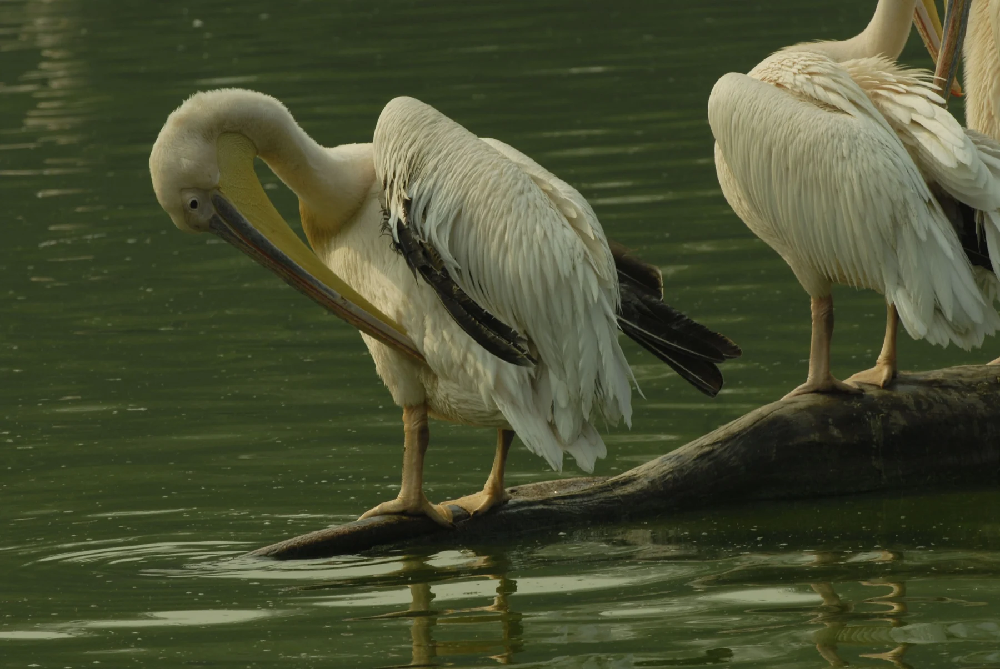

Heritage.
Carved stone, ancient arches, lakeside pavilions and monument gateways. A record of architectural heritage as enduring spaces filled with memory.
05 PHOTOGRAPHS ↓History is more than what we leave standing.
It lives in the arches, steps and weathered hillside stone that give a place its timeless meaning.
A place is more than a façade
Stone, light and repeated architectural forms carry the eye through this collection of five photographs. There are rock-cut openings carved into the hillside, ascending sandstone steps leading to a grand gateway, and a domed monument seen through an ornate scalloped arch. The pictures place enduring structures beside moments of quiet space, allowing us to encounter heritage through perspective, proportion and stone.
Architecture gives these photographs their lines: columns divide a hillside, steps draw the eye upwards, and a scalloped arch turns a distant building into a picture within a picture. The collection moves between the monumental scale of ancient rock and the welcoming geometry of a Mughal portal. It offers a way to look at heritage as a visible encounter between shaped stone and the open sky.
Three things to look for
- 01
Look for a frame within the frame
Openings and scalloped arches guide what we can see. Notice how each threshold changes the distance between you and the subject.
- 02
Follow repetition and geometry
Columns, steps and arches create rhythm. Notice the calm of repeated stonework against open forecourts and rising horizons.
- 03
Change your sense of scale
Move from the intimate cut of hillside caves to the monumental grandeur of red sandstone gateways rising into the light.
Framed by an Arch
A scalloped opening shapes the view before the distant dome comes into focus. Its darker edges lead into the brighter forecourt, giving the photograph several layers of depth. Start at the threshold, then let your eye travel through it.
Read the related storyA different way
of looking.
No photographs match this search.
